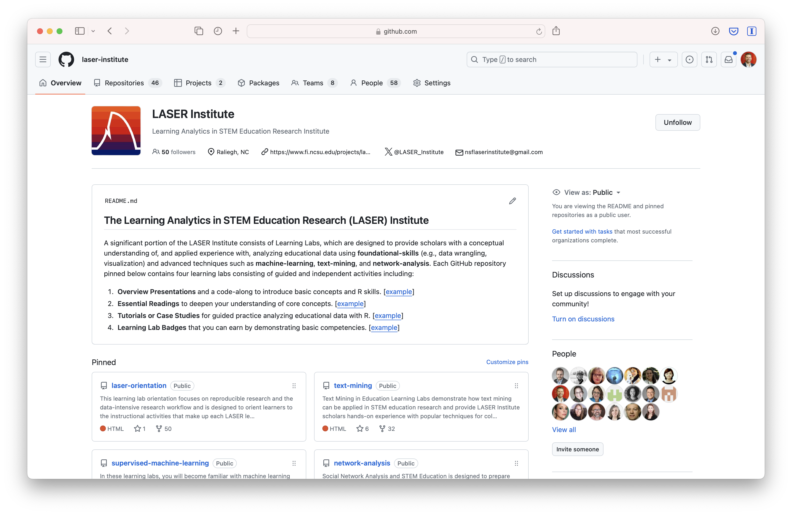
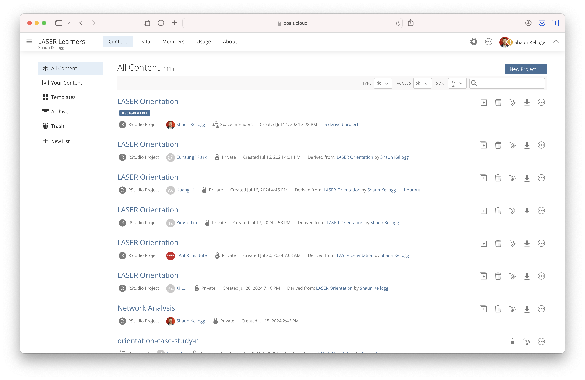
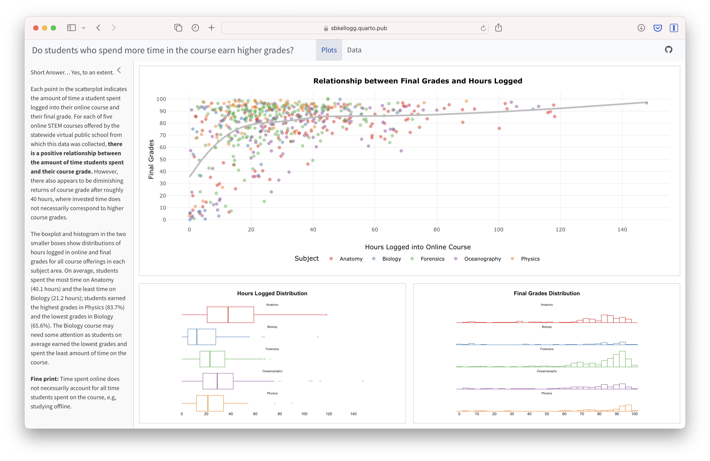
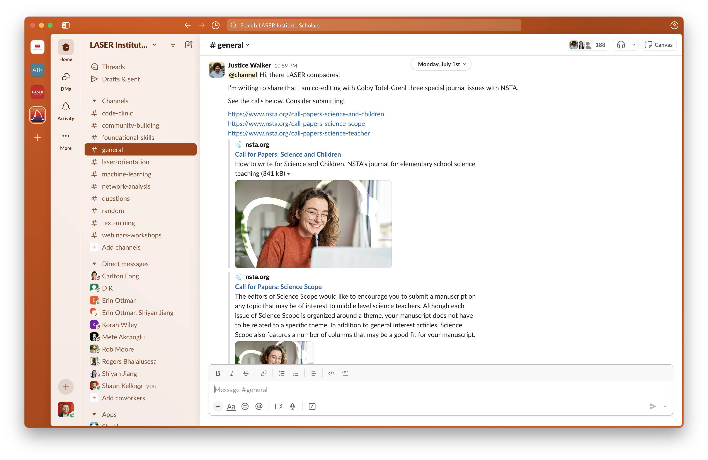

LASER Toolkit
The LASER Institute uses a suite of interactive tools for the design and delivery of instructional activities:
GitHub

Github is used for hosting the LASER website and instructional materials. All files and and source code for the is housed on the LASER Institute GitHub organization site and deployed using GitHub Pages, an all-in-one platform deploying dynamic websites from Git. Housing all materials on GitHub allows for version control and collaborative editing of curriculum materials as well as the addition of new materials that may be developed by participants.
Create a free GitHub account at: https://github.com/signup.
Note: You can now connect Github CoPilot to your Posit Cloud projects individually. You must have access to Github CoPilot through your Github account. Github’s CoPilot is a AI PairProgrammer that you can enable with RStudio. To read more about the set up check out Posit’s User Guide.
Visit our LASER Institute GitHub site at: go.ncsu.edu/laser-github

Posit Cloud

The LASER Institute makes extensive use of, and highly recommends, Posit Cloud for our LASER Learning modules. Posit Cloud lets you access Posit’s powerful set of data science tools, right in your browser with no installation or complex configuration required.
Register for a free Posit Cloud account at: https://login.posit.cloud/register.
LASER Learners Workspace
The LASER Learners Workspace is where we host the interactive R and Python module activities. This workspace contains RStudio “projects” for each method area, each with their own working directory, workspace, installed packages, and source documents.
To access this workspace, use the following link: go.ncsu.edu/laser-learners.
LASER Instructors Workspace
The LASER Instructors Workspaceis where instructors can customize and adapt the curriculum materials you plan to use for your own webinar, workshop or course.
To access this workspace, use the following link: go.ncsu.edu/laser-instructors
Posit Recipes & Cheat Sheets
For R users, we highly recommend taking advantage of the great resources provided through Posit Cloud for learning R. For example, Posit Recipes provide a collection of R code snippets and instructions featuring up-to-date best practices for coding in R. Posit Cheat Sheets also provide handy printable reference sheets to commonly used packages and their essential functions, including example code for testing them out.

RStudio IDE

RStudio Desktop is a free desktop application of the RStudio Integrated Developer Environment (IDE) that runs on Windows, MacOS or Linux. Its advantages over Posit Cloud include offline access, full control over the local environment, customization options, data privacy and security, and the ability to leverage the full resources of your local machine, such as CPU, memory, and storage. While we will be using RStudio through Posit Cloud for the LASER Institute, we recommend shifting to RStudio Desktop for your own research.
Though we will primarily use Posit Cloud for data analysis activities using R or Python, you are welcome to adapt and complete these activities using a Integrated Developer Environment (IDE) of your preference such as Jupyter Labs, Visual Studio, Google Collab, or PyCharm. Please note that support by the project team for the alternative IDEs is very limited so we will rely on those in our scholar community with expertise to assist.

Quarto

Quarto is an open-source scientific and technical publishing system used for creating reproducible, production quality articles, presentations, dashboards, websites, blogs, and books in HTML, PDF, MS Word, ePub, and more. Quarto can be used with R, Python, and other programming languages and is used extensively throughout the institute. All LASER Institute instructional materials, including this website, are created with Quarto.
Quarto Pub is a free and easy web publishing platform for Quarto docs. To publish the documents via Quarto Pub, however, you will first need to create an account.
To create a Quarto Pub account, sign up here: https://quartopub.com/sign-up
Note: If you are using RStudio Desktop, you may need to download and install Quarto here: https://quarto.org/docs/get-started/
To interact with a simple example data dashboard built with Quarto for LASER visit: https://sbkellogg.quarto.pub/final-grades-and-hours-logged/#plots

Slack
Throughout the year, we provide ongoing asynchronous support and communication through Slack (http://slack.com), a web-based app that allows for text messaging, voice and video calls, and media and file sharing either in private chats or as part of communities called “workspaces.” Slack runs on Web, Windows, Linux, MacOS, Android, Windows Phone and iOS.
To join our LASER Institute workspace on Slack, create an account and visit: https://go.ncsu.edu/laser-slack.
